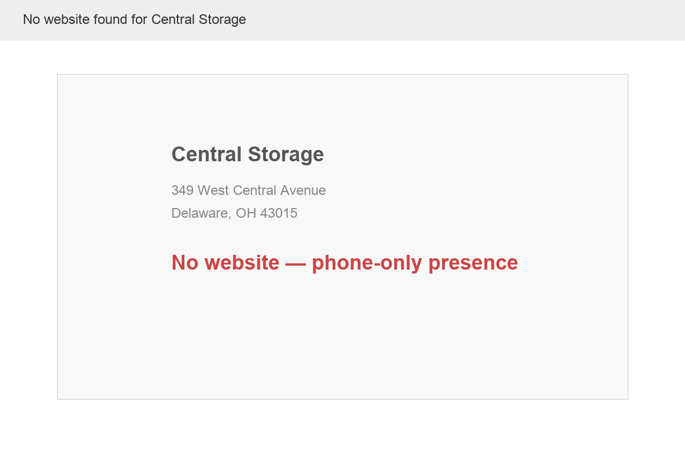

Central Storage is a locally owned self-storage facility at 349 West Central Avenue in Delaware, Ohio. Owned by Chuck Smith and managed by Anita Patrick, the facility offers self-storage units in a variety of sizes in a secure, lighted, fenced-in facility with amenities including drive-up access, elevator access, and complimentary dollies and carts for customers.
When a family in Delaware County needs storage — because they're moving, downsizing, renovating, or simply running out of space — they search online. They compare options by price, location, security, and reviews. They book online or call the first number that shows up in Google. The facility that appears with photos, reviews, and a reservation option wins. The one that doesn't appear loses that customer to a competitor before they ever knew there was a choice.
The location is exceptional. West Central Avenue (US-36/OH-37) is one of Delaware's main commercial corridors, carrying significant daily traffic. Central Storage sits closer to downtown Delaware than its largest competitor — giving it a proximity advantage for the city's residents, Ohio Wesleyan University students, and the growing downtown business community.
And Delaware County's growth story is Central Storage's growth story. The county is Ohio's fastest-growing, adding over 16,000 residents in three years and pushing past 231,000 people. Roughly 12 new residents arrive every day. The median home sale price hit $510,000 in 2025. People moving in need storage during transitions. People upsizing need storage for overflow. People downsizing need storage for what doesn't fit. College students at Ohio Wesleyan need summer storage. Businesses in the growing Delaware commercial district need document and inventory storage.
Central Storage has the facility, the location, and the market demand. What it doesn't have is a way for any of those potential customers to find it online.
Self-storage is a $50+ billion industry in the United States, and the fundamentals remain strong even as the post-pandemic surge has normalized. According to Yardi Matrix, national advertised street rates increased 0.3% year-over-year as of December 2025 — a significant improvement over the 2.3% decline of 2024. New supply is moderating (forecast at 2.4% of total stock in 2026, down from 3.0% in 2025), which means existing facilities with good locations are well-positioned to maintain and grow occupancy.
For locally owned facilities like Central Storage, the competitive landscape is defined by a clear divide: national chains with massive digital marketing budgets vs. independent operators who often lack any web presence at all. The chains (CubeSmart, Public Storage, Extra Space) dominate online search because they've invested heavily in SEO, paid ads, and online booking platforms. Independent facilities with comparable — or better — locations and pricing often lose potential customers simply because they can't be found online.
Self-storage is one of the most location-dependent businesses in existence. Customers rarely drive more than 10-15 minutes to their storage unit. Central Storage's position on West Central Avenue, close to downtown Delaware, gives it a natural catchment area that includes:
West Central Avenue is Delaware's primary east-west commercial artery, connecting downtown Delaware to US-23 and the western reaches of the county. It carries thousands of vehicles daily — commuters, shoppers, and residents moving between home and downtown. For a self-storage facility, this kind of drive-by visibility is invaluable. People who pass Central Storage every day develop subconscious brand awareness — when they need storage, the name is already familiar.
But drive-by visibility only converts when it's paired with digital discoverability. A driver who notices the Central Storage sign and Googles the name later that evening needs to find a website with unit sizes, pricing, and a way to reserve. Right now, they find a Chamber directory listing and an unclaimed Yelp page. That's not enough to convert interest into action.
Delaware County has been the fastest-growing county in Ohio for multiple years running, adding thousands of new residents annually. This growth has a direct effect on self-storage demand in several ways:
Central Storage sits at the center of this growth story. A facility that has operated successfully at 349 West Central Avenue for years is now surrounded by the kind of population growth that drives self-storage demand. The question is whether the facility is digitally visible enough to capture its share of that demand — or whether national chains with better online presence will capture it instead.
In the self-storage industry, facilities compete on five key factors: location, price, security, convenience, and customer service. Let's assess Central Storage on each:

Captured March 29, 2026
Central Storage has virtually no digital footprint. In an industry where over 70% of new customers find storage facilities through online search, this represents a significant revenue gap. Here's the current state:
The self-storage industry has undergone a dramatic shift toward online customer acquisition. Consider these realities:
The net effect: Central Storage is losing 5-15 potential tenants every month to competitors — not because of inferior facilities or pricing, but because those customers never knew Central Storage existed as an option.
When someone searches "storage units Delaware Ohio" on their phone, they see Google results with photos, star ratings, hours, and prominent links. CubeSmart has 126+ reviews, multiple facility photos, and a "Reserve Now" button that takes the customer directly into a booking flow. If Central Storage appears in results at all, it is a bare listing: just a name, address, and phone number. No photo, no reviews, no link. The visual comparison alone — before a customer reads a single word — communicates "professional and trustworthy" vs. "unknown quantity." Most customers click on the polished result.
Fixing this does not require outspending CubeSmart on advertising. It requires a Google Business Profile with photos, a handful of reviews from satisfied tenants, and a website link. These are one-time setup tasks that permanently change how Central Storage appears in search results and how customers perceive it relative to competitors.
Central Storage competes directly with national chains and a well-established local operator. Here's the competitive landscape on West Central Avenue and the surrounding Delaware market:
CubeSmart is literally on the same street — 1402 West Central Avenue vs. Central Storage at 349 West Central Avenue. They're less than a mile apart. CubeSmart is a publicly traded, multi-billion-dollar national REIT with 1,300+ facilities across the country. They have a professional website with virtual tours, a mobile app with remote gate access, 126 Google reviews averaging 4.8 stars, online booking, and a full-time digital marketing operation.
This sounds intimidating — but here's the thing: national chains aren't invincible. CubeSmart's reviews, while numerous, are mixed. Some customers prefer the personal touch of a locally owned facility. CubeSmart's pricing is often higher than local competitors because they run dynamic pricing algorithms that increase rates after the initial move-in. And their customer service is corporate — there's no Chuck or Anita who knows your name.
All Seasons Self Storage on State Route 37 East shows what a well-marketed local operator can achieve. They have a professional website with online booking, a YouTube promo video, climate-controlled units, U-Haul rental partnerships, and a one-year rate lock guarantee. They prove that a locally owned storage facility in Delaware can compete with national chains — if the digital infrastructure is there.
Understanding how CubeSmart acquires customers reveals exactly why Central Storage is losing business:
None of this means CubeSmart offers a better facility. It means they have a better digital sales funnel. And a digital sales funnel is something Central Storage can build — without a corporate marketing budget.
Google and Yelp reviews for national chain storage facilities across Ohio tell a recurring story. A pattern in negative reviews appears consistently: unexpected rent increases every 3-6 months, difficulty reaching a real person, and billing disputes handled by offshore call centers. These are structural weaknesses of the national chain model that Central Storage can permanently exploit.
Many storage customers do not switch facilities simply because the hassle of packing, renting a truck, and unpacking feels overwhelming. But the right digital messaging — a "No surprise rate hikes" promise on the homepage, a straightforward pricing page, and customer testimonials from long-term tenants who appreciate the stable rates and personal service — can shift that calculation. A customer sitting on a 40% rate increase from a national chain, finding Central Storage's website with clear pricing and friendly local ownership, may decide the move is worth it after all.
Targeting lapsed or frustrated national chain customers is one of the most cost-effective customer acquisition strategies available to an independent storage facility. The customers are already primed to switch. Central Storage just needs to be findable and credible when they search for alternatives.
Self-storage searches are highly intent-driven — people searching for storage are ready to rent. This makes every missed search a lost customer:
Self-storage search behavior is distinct from most local services:
Ohio Wesleyan University has approximately 1,400 students, many of whom need storage between academic years. Every May, hundreds of students need somewhere to store furniture, clothing, and belongings for the summer. Every August, they need to retrieve it. This is a reliable, recurring, seasonal revenue stream that Central Storage is perfectly positioned to capture — the campus is less than a mile away.
Students and their parents search for "storage near Ohio Wesleyan," "summer storage Delaware OH," and "student storage OWU." A website with a dedicated student storage page, summer pricing, and easy online reservation would capture this audience — most of whom are digital-first researchers who won't call a phone number they found in a directory listing.
Small businesses in Delaware County represent an often-overlooked self-storage segment. Contractors, landscapers, retailers with seasonal inventory, and home-based businesses all need secure, accessible storage. Unlike residential customers who rent month-to-month, business storage tends to have longer retention and higher unit size needs. Central Storage's drive-up access and central location make it practical for business customers who need to load and unload equipment regularly.
Searches like "business storage Delaware Ohio," "contractor storage unit near me," and "commercial storage Delaware" are low-competition, high-value queries. A dedicated business storage section on the website explaining the drive-up access, elevator availability, and security features would capture this audience and build a loyal recurring revenue segment.
Self-storage demand follows a predictable calendar that a digital presence can capitalize on with seasonal content and promotions:
A website with a seasonal promotions calendar and the ability to feature special rates gives Central Storage a marketing tool that phone-only operations simply cannot use effectively.
The self-storage industry is in the middle of a digital transformation. Here's what's changing:
The expectation for online booking in self-storage has shifted from "nice to have" to "table stakes." A 2025 industry survey found that over 50% of storage customers now prefer to reserve units online rather than visiting in person or calling. The younger the demographic, the higher that percentage. CubeSmart, Public Storage, Extra Space — all major operators have invested heavily in online reservation systems because they know that's where the customer journey happens.
When someone asks ChatGPT "Where can I store my stuff in Delaware, Ohio?", the AI pulls from structured web data — Google Business Profiles, websites with schema markup, and review platforms. Without a website or optimized GBP, Central Storage won't appear in any AI-generated recommendation. As AI tools become the starting point for more searches, this gap will widen.
Storage aggregator sites like SpareFoot, StorageCafe, and SelfStorage.com are also increasingly dominating search results. These platforms list facilities with online booking capabilities — which means Central Storage isn't listed on any of them. Each aggregator represents another channel of potential customers that Central Storage is missing.
National chains use dynamic pricing algorithms that adjust rates based on occupancy, demand, and competitor pricing. Independent operators with websites can implement simpler versions of this — offering move-in specials, seasonal discounts for students, and promotional rates during slow months. Without a website, Central Storage can't communicate any pricing flexibility to the market.
"Hey Siri, find storage near me" — this type of search is growing rapidly. Voice assistants pull from Google Business Profiles and websites with proper LocalBusiness schema. Central Storage's lack of both means it's invisible to every voice search, every Google Maps lookup, and every "near me" query from a mobile device.
Google reviews have become the dominant trust signal in self-storage. When someone researches storage options, they look at star ratings before anything else. CubeSmart's Delaware location has 126+ Google reviews. Central Storage has limited to none. This asymmetry is not a reflection of service quality — it is a reflection of who has a system for collecting reviews. A proper review collection process (QR codes at the office, follow-up texts after move-in) would start closing this gap immediately, and every new review compounds the visibility benefit.
Storage aggregator platforms like SpareFoot, StorageCafe, and SelfStorage.com have become a primary discovery channel for self-storage customers. These sites rank prominently in Google search results for storage queries and offer online booking capabilities. Facilities listed on these platforms get additional customer acquisition at relatively low cost. Central Storage's lack of a website and online booking system means it cannot be listed on any of these aggregators — an entire channel of customers that is currently unavailable.
Central Storage needs a digital presence that does three things: makes the facility findable, displays unit information and pricing, and allows customers to reserve online. Here's the plan:
Build a clean, conversion-focused website with: homepage featuring the facility and key selling points, unit size guide with pricing, photo gallery of the facility (security features, unit types, access points), amenity descriptions, location map with directions, and a prominent phone number and reservation CTA on every page. Mobile-first design because most storage searches happen on phones.
Claim, verify, and fully optimize the Google Business Profile. Correct categories (Self-Storage Facility), complete amenity list, professional facility photos, hours, and detailed description. Weekly Google Posts with promotions and availability updates. This single step puts Central Storage on the map — literally — for every "storage near me" search in Delaware.
Implement a simple online reservation system — customers browse available unit sizes, see pricing, and reserve with a credit card. This can be as simple as a form that notifies Anita by email and text, or a full self-service booking system integrated with facility management. Either way, it captures the customers who won't pick up the phone.
Implement a systematic review collection process. When tenants pay rent or visit the facility, ask for a Google review with a simple card or text link. Target: 20+ reviews in the first 6 months. Even getting to 20 reviews with a 4.5+ average would dramatically close the gap with CubeSmart's 126 and make Central Storage competitive in search results.
Create a dedicated "OWU Student Storage" page with summer pricing, move-in/move-out scheduling, and student-friendly messaging. Promote through OWU campus channels, student Facebook groups, and targeted search ads during April-May. This captures a reliable, recurring seasonal revenue stream that refreshes every year with new students.
Before we even build a full website, there are several zero-cost or low-cost actions that would immediately improve Central Storage's digital visibility. Consider these the first 30 days:
These quick wins cost nothing except a few hours of time and would produce measurable improvements in search visibility within 30-60 days. They also lay the groundwork for the full digital build, giving the new website something to link to and be linked from from day one.
Self-storage is a straightforward business — the website should be too. Our process is designed to get Central Storage online and generating leads fast:
The first three months are the highest-impact period for a self-storage digital transformation. Here is the granular view of what those 90 days look like for Central Storage:
Total time commitment: under 2 hours across the entire project. Anita doesn't need to learn any new software — reservation notifications come as emails and texts she can respond to naturally.
A website is the foundation. Here's the full digital ecosystem that would maximize Central Storage's revenue potential:
Fully optimized GBP with professional photos, complete amenity list, weekly Google Posts with availability updates and promotions. This puts Central Storage on the map for every "storage near me" search — the single highest-volume query in the self-storage industry.
A self-service booking system where customers browse unit sizes, compare pricing, and reserve 24/7. Captures the 50%+ of storage customers who prefer to book online rather than calling. Reduces Anita's phone workload while increasing total reservations.
Dedicated OWU student storage page with summer rates, flexible terms, and easy online booking. Promoted through campus channels and targeted ads during April-May. A reliable annual revenue stream of 50-100+ student units during the summer months.
Systematic collection of Google reviews from existing tenants. QR code cards at the office, text links sent with rent reminders, and a "Leave a Review" prompt on the website. Target: 50+ reviews within the first year to close the gap with CubeSmart's 126.
Move-in specials during slow months, student discounts in spring, "first month free" promotions to compete with CubeSmart's aggressive offers. A website makes it possible to promote these deals in search results, Google Ads, and social media — driving occupancy during traditionally soft periods.
List Central Storage on SpareFoot, StorageCafe, SelfStorage.com, and other aggregator platforms that drive high-intent traffic. These platforms require a website and booking capability — which is why Central Storage isn't listed on any of them today. Each aggregator is another lead channel.
Beyond acquisition, digital tools improve the ongoing customer relationship for self-storage tenants. Modern storage customers expect digital touchpoints at every stage:
These communication tools are not just conveniences — they are active retention and revenue tools that reduce churn, improve cash flow, and build the review profile that drives new customer acquisition. The best storage facilities run like subscription businesses: great onboarding, low friction billing, and proactive communication.
In most industries, being locally owned is a soft advantage. In self-storage, it is a concrete, quantifiable competitive edge — if communicated properly. Here is why local ownership matters in storage and how a digital presence makes that advantage visible:
National chains like CubeSmart, Public Storage, and Extra Space Storage use sophisticated dynamic pricing algorithms. Customers rent at an introductory rate that looks attractive, then receive rate increase notices every 3-6 months. It is not uncommon for CubeSmart customers to have their monthly rate increased 30-50% within the first year. This is a known pain point — customer reviews across the country mention unexpected rate hikes as the #1 complaint about national chains.
Central Storage, as a locally owned facility, can offer something national chains cannot: transparent, stable pricing with a reasonable rate increase policy that is communicated honestly upfront. A website that highlights "no surprise rate hikes" and "locally owned with fair, stable pricing" would directly address the #1 reason people leave national chains.
When a CubeSmart customer has a billing issue or access problem, they call a national customer service number, wait on hold, and speak with someone who has no local context. When a Central Storage customer has an issue, they call Anita. This is not a small difference — it is a fundamental service quality advantage that resonates deeply with customers who have been burned by national chain bureaucracy.
A website can amplify this advantage: "Call Anita directly at (740) 363-5374" in the header of every page. A photo of Chuck and Anita on the About page. A testimonial section where long-term tenants describe the personal service experience. These are trust signals that a national chain cannot replicate, and they convert fence-sitters into customers.
Local businesses that support the community earn loyalty that national chains cannot buy. A website with a brief note about Central Storage's history in Delaware, its support for local events or nonprofits, and its commitment to the community creates an emotional connection that translates to customer preference. Delaware County residents increasingly prefer to support local over national when quality and convenience are comparable. Give them the information and context they need to make that choice, and many will choose Central Storage.
Self-storage is a recurring revenue business with high customer lifetime value. Once someone rents a unit, they typically keep it for 12-14 months on average, with many tenants staying years. Here's the math:
Let's look at what even modest digital visibility would mean for Central Storage. If a website and Google Business Profile capture just 5-10 new tenants per month that would have otherwise gone to CubeSmart or All Seasons, the numbers add up quickly:
Add the student storage opportunity (50-100 units for 3-4 summer months at $50-$80/month) and the numbers grow further.
The beautiful thing about self-storage economics is that incremental tenants are almost pure profit. The facility's fixed costs (property, insurance, maintenance, lighting, security) are already being paid whether a unit sits empty or occupied. Every additional rented unit generates revenue with minimal additional cost. Going from 80% occupancy to 95% occupancy doesn't double revenue, but it can more than double profit because those incremental units are nearly 100% margin.
The Ohio Wesleyan student storage opportunity deserves special attention because it's both significant and currently untapped by Central Storage:
A dedicated student storage page, promoted through OWU campus channels and targeted search ads during April-May, would capture a meaningful portion of this demand. Central Storage's proximity to campus — less than a mile — is the ultimate competitive advantage for this audience.
What makes digital investment particularly valuable for self-storage is the compounding nature of the returns. Unlike a one-time marketing campaign, a website and Google Business Profile work continuously:
This compounding model means the ROI of the initial digital investment grows significantly over time. The marginal cost of the 50th online reservation is essentially zero — the website and booking system are already in place. Compare this to a print ad or a one-time promotional campaign where the spend must be repeated to maintain the result.
Self-storage occupancy economics are straightforward. A facility running at 85% occupancy vs. 70% occupancy on the same number of units represents a 21% revenue increase with zero additional overhead. Digital visibility that drives occupancy from 70% to 85% is pure profit improvement. For a facility of Central Storage's size, even modest occupancy improvements from digital-driven customer acquisition represent meaningful annual revenue gains that far exceed the cost of the website and marketing investment.
Aspire Digital works with locally owned businesses that are great at what they do but haven't had the time or resources to build the digital presence they deserve. Central Storage is the perfect example: a well-located facility with solid amenities and local ownership — competing against a publicly traded national chain that spends millions on digital marketing.
We're not going to tell Chuck and Anita to outspend CubeSmart on Google Ads. That's not realistic and it's not necessary. What we'd build is a focused digital foundation — a professional website, an optimized Google Business Profile, an online reservation system, and a review generation process — that puts Central Storage into every relevant local search and gives customers a reason to choose local over corporate.
The self-storage industry is unique in that location is the dominant competitive factor. Central Storage's position closer to downtown Delaware, Ohio Wesleyan, and the east-side neighborhoods is a permanent advantage. All it needs is digital visibility to unlock that advantage. No amount of CubeSmart's marketing budget can move their building closer to downtown.
We'd approach Central Storage's website differently than most. Storage customers are in a hurry — they need unit sizes, prices, availability, and a way to reserve. The site would be built for speed and conversion: no scrolling through paragraphs of marketing copy. Clear unit grid, visible pricing, one-click reservation. Get the customer from search to reserved in under two minutes.
Here is what a realistic digital transformation looks like for Central Storage over the first year:
By the end of year one, Central Storage would have a professional digital presence, an active review profile competitive with CubeSmart's, an online reservation capability, and a seasonal marketing calendar that runs on autopilot. That is the foundation for sustained occupancy growth in one of Ohio's fastest-growing counties.
No pressure, no corporate pitch — just a conversation about building a digital presence that turns Central Storage's great location into full occupancy.
Book a Free Strategy Callor email Chris directly
Central Storage · 349 West Central Avenue, Delaware, OH 43015 · (740) 363-5374 · Chuck Smith (Owner) · Anita Patrick (Office Manager)